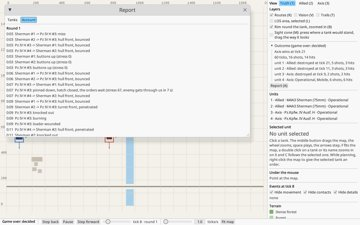
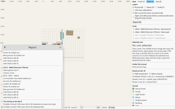
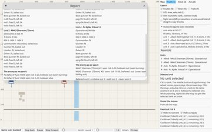
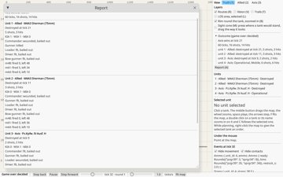

tankzim2000 After-action report
Built 7
Version 0.22.0 1
The outcome is a readable accountBuilt0.22.0
someone who did not write the code can read what happened, round by round. Built from the event log by one shared events-to-text function, which the gui's event list uses too (gui-event-list-raw-debug). Settled 2026-11-13, the content of the list: who shot at whom, hit or penetration, knocked out or bailed out, and why a unit stopped or backed out. Movement is left out, as noise. Prose can come later. Built 2026-11-13 (F10 step 3): the report window's Account tab lists the story per round ("Round 1", the time in the round as 0:12), vehicles named short ("Sherman #1", "Pz IV H #3", short_name in the vehicle file); a side's view shows only what it saw, through the same filter as the event list.
Question: What is the readable account of a scenario: what does it say, and in what form?
Options
✓A plain list per round, from one events-to-text function
Shared with the gui's event list.
Why: Chosen on 2026-11-11, the recommendation.
Facts
| stated | Verification: someone who did not write the code understands what happened in the scenario. | docs/archive/MILESTONES.md, F10 |
| stated | The F10 text is the milestone's plan. It is not a quote from the discussion. | docs/archive/MILESTONES.md, F10 |
Code
src/account.rs: event_linesrc/account.rs: accountsrc/gui.rs: report_view
Pictures

Version 0.21.1 2
Which view the end data showsBuilt0.21.1
The end data shows the true state as its main view, and what each side saw as a second section. Built 2026-11-13 (F10 step 2): per side, each enemy it saw over the whole game (first and last tick seen, what it believed when it last saw it, the plainest sign it saw), and in the truth view one line comparing what the side believed with the truth (believed out, probably out, really out, never seen). A side's own view shows only its own column, without the comparison. Fog as a setting chosen when a scenario starts comes later.
Question: Does the end data show the true state, or what a side saw?
Options
✓The true state
The main view: what really happened.
Why: Chosen on 2026-11-11, the recommendation.
✓What a side saw
A second section per side: what that side saw.
Why: Chosen on 2026-11-11, the recommendation.
Facts
| stated | The source asks whether the end data shows the true or what the side saw. | docs/archive/tacai.md 1.1 |
Code
src/summary.rs: SideSawsrc/summary.rs: sides_sawsrc/gui.rs: report_column
Open
- Fog as a scenario setting, later (kept as later, 2026-11-13).
Pictures

The report window in two columns, one per sideBuilt0.21.1
Built 2026-11-13: the report window has two columns in the truth view, Allied on the left and Axis on the right; a side's own view shows one column.
Question: How is the report window laid out when it shows both sides?
Facts
| observed | The report window lists all units in one column (for u in &summary.units). | src/gui.rs: report_view |
Code
src/gui.rs: report_view
Pictures

Version 0.21.0 4
The end data is a machine-readable exportBuilt0.21.0
Each run ends with machine-readable end data, and the AAR is built from it. The source leaves the form free as long as it is logical for a machine. The finished export is what would let someone build a strategic layer on it later. Planned 2026-11-13 as F10 step 1: per tank in RunSummary (src/summary.rs) the crew per place (role, health, bailed out) from the engine's own events (Event::Crew, the sign CrewBailedOut), the KIA/WIA/MIA counter, and the ammunition by type (at the start, left, fired = start minus left); shown in a view that opens inside the window. Step 2 what each side saw (report-fog-view), step 3 the readable account and the report page. Built 2026-11-13 (F10 step 1): each tank's summary carries its crew per place, the loss counter and the ammunition by type; the ammunition at the start is in the recording's header (format version 4), chosen 2026-11-13, the recommendation.
Options
✓Machine-readable data beside the HTML
The end data is written as data for a machine. The HTML is built from it.
Why: Chosen: the export suits a web service too, and the HTML is built from the same data.
Facts
| stated | The form of the export is free, as long as it is logical for a machine. | docs/archive/tacai.md 1.1 |
| stated | RunSummary gives the winner, the tick it was decided, shots, hits and data per unit. It has no crew fate and no loss counter. | src/summary.rs: RunSummary |
| stated | TickSnapshot.events is in practice the contract of the old M13, which is now F10. It came half a year early, driven by debugging needs and not by planning. | SESSION.md, milestone list (note under F10) |
Code
src/summary.rs: UnitSummarysrc/summary.rs: summarize_finalssrc/recording.rs: UnitInfo
Pictures

The crew's fate per place is in the end dataBuilt0.21.0
When a tank is knocked out, the end data says what happened to the crew, per place in the tank. It is written at the end of the run and does not belong to the course of the round. The chain that leads to it is in the shot part. Built 2026-11-13: each place has its health (fit, wounded, killed) and whether the man bailed out. He bailed out when he is not killed and the tank's knock-out sign (the first sign after it was knocked out) was a bail-out or fire; in a silent tank the wounded stay inside. Chosen 2026-11-13, the recommendation. Known gap: a wounded man left in a silent wreck that later burns does not die in the engine.
Question: Where is the crew's fate written?
Options
✓In the end data, per place
The fate of each place in the tank, written at the end.
Why: Chosen: it belongs to the end data, not to the course of the round.
In the course of the round
Written as events while the round runs.
Facts
| stated | The quote is written in English in the source, so the English rendering is the same. | docs/archive/tacai.md 1.1 |
Code
src/summary.rs: CrewFatesrc/summary.rs: fates
Pictures

Losses are a counter per tankBuilt0.21.0
The AAR shows losses as a counter. Dead, wounded and missing are counted separately, and per tank. Settled 2026-11-13: the counter is KIA, WIA and MIA. KIA is a man Killed, WIA a man Wounded; MIA is always 0 until the engine can lose a man outside the tank. Men who bail out unhurt are not a loss: they stand as the crew's fate ("bailed out"). Built 2026-11-13: KIA and WIA counted from the men's health, MIA always 0.
Question: How are the losses shown in the AAR?
Options
✓A counter per tank
Dead, wounded and missing counted separately, per tank, shown in the AAR.
Why: Chosen: with individual crew members as the unit, the outcome is hard to explain.
Individual crew members
Each crew member tracked as its own unit.
Why: Not chosen: it makes the simulation hard to follow.
Facts
| stated | The counter counts dead, wounded and missing separately, and per tank. | docs/archive/tacai.md 1.1 |
Code
src/summary.rs: Lossessrc/summary.rs: losses
Pictures

Ammunition in the AARBuilt0.21.0
Decided, not built: the AAR shows the rounds fired and the rounds left per tank, by type. Nothing more (not which rounds went at which target). Built 2026-11-13: rounds at the start, left and fired (start minus left) per tank and type; an old recording shows fired as unknown.
Question: What ammunition does the AAR show?
Options
✓Fired and left, by type
Rounds fired and rounds left per tank, by type.
Why: Chosen on 2026-11-11, the recommendation.
Facts
| stated | The session notes list the ammunition in the AAR as still to do. | SESSION.md, the 2026-11-07 note on ammunition |
Code
src/summary.rs: UnitSummarysrc/models.rs: minus
Pictures

Parked 2
Export of the AAR to a web serviceParked
Parked on 2026-11-11: exporting the AAR to a web service. Nothing to send before the report exists, and the HTML report is a file that can be put anywhere.
Question: Which web service is the AAR sent to, and how?
Options
From the gui
Send the AAR to a service from the window.
From the CLI
Send the AAR to a service from the command line.
Facts
| stated | Noted in the source, not decided: which service, and how. | docs/archive/tacai.md 1.1 (note) |
Open
- Taken up when the report exists and there is somewhere to send it.
A strategic layer on top of the exportParked
A strategic layer, which is campaign level, is not a goal now. The finished export is what would let someone build it later.
Facts
| stated | Crew losses and location statistics are campaign level. | docs/archive/tacai.md 1.1 (background) |
| stated | A strategic layer is not a goal now. | docs/archive/tacai.md 1.1 (background) |
Later (3)
The log explains the outcomeIdea
If each decision in the log carries its reason, the AAR's why line comes almost for free.
The source's example is a tank backing up with the reason written in the log, e.g. 'Backs: #3 penetrates our front at 900 m, we do not penetrate his.' The same log would feed the after-action report and the why line in the gui.
Facts
| stated | Each decision is an event with its reason. That makes the after-action report nearly free, and gives a why line in the gui. | docs/archive/tacai.md, section 6 |
A language model writes a narrative from the logsIdea
Optional, later: a language model writes an after-action narrative from the logs, as an addition to the report.
Not part of the first version of F10. The source calls it optional and for later, and it would read the machine-readable logs.
Facts
| stated | Later and voluntary, as an addition to F10. | docs/archive/tacai.md, section 6 |
The map as SVG in the pageIdea
The map can sit in the HTML page as SVG, as the range output already does.
The range output in out/range/ is already SVG, so the same format would fit the AAR page.
Facts
| stated | The map can sit in the page as SVG. The project already makes SVG, e.g. out/range/. | docs/archive/tacai.md 1.1 |
Maybe (1)
Fog as a scenario settingIdea
Fog could be chosen when a scenario starts, and the end data would then show the true state or what the side saw.
Not in scope now. Whichever view the end data shows is the open question in the decision on the end data's view.
Facts
| stated | Fog may in the future be chosen when a scenario starts. | docs/archive/tacai.md 1.1 |
No model yet (docs/tacai_model.json).
No model yet (docs/tacai_model.json).